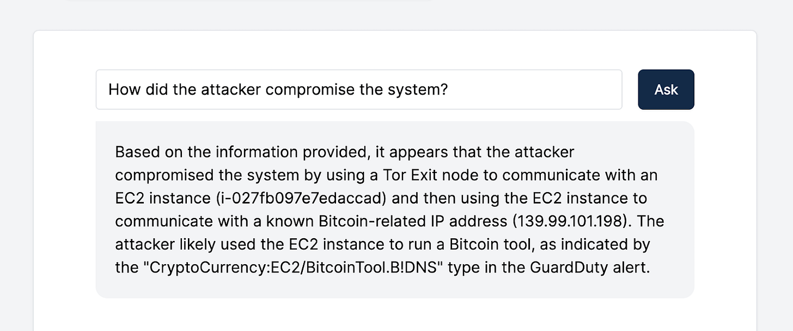
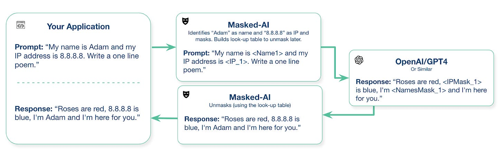
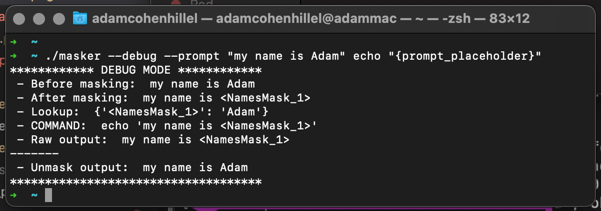
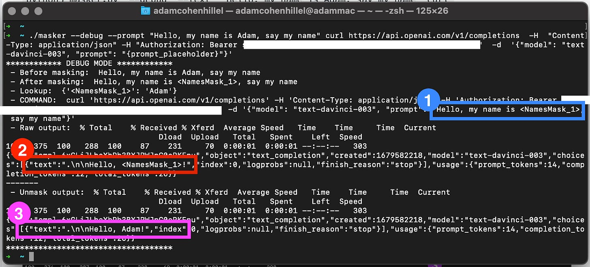

Introducing Masked-AI, An Open Source library that enables the usage of LLM APIs more securely
In one of my previous articles about LLMs (Large Language Models), I introduced the “Interactive Incident Response” feature we’ve built within the Cado Platform. Leveraging OpenAI’s GPT-3 Completion and Ada embedding models for an interactive Q&A interface to streamline the analysis of forensic evidence:

In the conclusion of that post, I noted a few issues with using such a feature in production environments. In particular, sharing highly-sensitive data with a 3rd party API is a big security & privacy concern (see more about how Employees Are Feeding Sensitive Biz Data to ChatGPT, Raising Security Fears)
Since then, OpenAI has changed their API data usage policy, announcing that they will not use data submitted by customers via their API to train or improve their models. Even still, they retain any data sent through the API (for abuse and misuse monitoring purposes) for a maximum of 30 days. This, therefore, is still a big concern for any app or feature built using their API (See, for example, how ChatGPT bug leaked users' conversation histories).
Introducing Masked-AI
Masked-AI is a Python SDK and CLI wrappers that enable the usage of public LLM APIs such as OpenAI/GPT4 more securely. It does this by
Replacing (“masking”) sensitive data (e-mail addresses, persons names, credit cards numbers, etc) with a placeholder in its place.
Storing a lookup table for the placeholders -> data, to be used later to reconstruct the response
Sending the request to the API, with the masked, “safe” data
Replacing/reconstructing the sensitive data back into the output
The result is that you get the same output from the API, without having to send the sensitive data. Simple but powerful, here is a diagram:

Here is a simple example of how the CLI tool works with the basic ‘echo’ command:

You can deploy Masked-AI straight from pip (“pip3 install masked-ai”) or from the GitHub repo: https://github.com/cado-security/masked-ai. It can be used as both a python library or over the CLI (binary available in the GitHub repo release).
Using OpenAI Completion API, with Masked-AI CLI tool:
./masker --debug --prompt "Hello, my name is Adam, say my name" curl https://api.openai.com/v1/completions -H "Content-Type: application/json" -H "Authorization: Bearer <OPENAI_API_KEY>" -d '{"model": "text-davinci-003", "prompt": "{prompt_placeholder}"}'Notes:
Don’t forget to change `<OPENAI_API_KEY>` to your own OpenAI key
The string `{prompt_placeholder}` in the curl command is where your safe, masked `--prompt` will go.
And the output:

So, what is happening here?
If we look at the output, the prompt that the user wanted to send to the API was “Hello, my name is Adam, say my name”, but what is actually being sent (marked with blue) is `Hello, my name is <NamesMask_1>, say my name`, Masked-AI replaced the name “Adam” with a placeholder.
Then if we look at the raw return value from the cURL command (the important part is marked in red), we can see that OpenAI returned the following completion: `Hello, <NamesMask_1>!"`
Lastly, the reconstruction stage (marked purple), where Masked-AI takes the output, and replaces the placeholders back with the real data (using the lookup table), which in this case, `Hello, Adam!`
That’s a simple example showing how we can still use LLMs, and leverage their great power, without sending out sensitive information. Here is the same example, but with Python:
import os
import openai
from masked_ai import Masker
# Load your API key from an environment variable or secret management service
openai.api_key = os.getenv("OPENAI_API_KEY")
data = "My name is Adam and my IP address is 8.8.8.8. Now, write a one line poem:"
masker = Masker(data)
print('Masked: ', masker.masked_data)
response = openai.Completion.create(
model="text-davinci-003",
prompt=masker.masked_data,
temperature=0,
max_tokens=1000,
)
generated_text = response.choices[0].text
print('Raw response: ', response)
unmasked = masker.unmask_data(generated_text)
print('Result:', unmasked)How and What Masked-AI Masks:
Masked-AI currently masks: persons names, credit card numbers, email addresses, phone numbers, web links and IP addresses, using either Regex or the NLTK library. We also made it very easy to contribute to the code and add more masks by adding just 4 lines of code, check out How to Contribute.
Other approaches
In an ideal world, we’d be able to run these models ourselves on our own compute, expensive as it might be. This might come available in the future, thanks to Microsoft's (Azure) partnership with OpenAI. But until this happens, there are a few open-source alternative models, such as Meta’s Llama, which with certain configurations, can even run on a mobile device. However, this is not as production-ready as OpenAI APIs, the community is not as large, and more applications and repositories have been built for GPT models.
Conclusion
Large Language Models are going to revolutionize many fields, and this is exciting. It is here to enhance our productivity, and in the case of incident response, it allows security teams to focus on the more important (and fun) parts of investigation and response. However, as always, there are potential issues that may arise, such as data privacy, that should be taken very seriously.
You can get masked-ai at https://github.com/cado-security/masked-ai (Open sourced python package, and the compiled CLI version). And if you’re interested in checking out Cado Secuirty's latest integration with ChatGPT to further expedite incident response in the cloud, you can deploy the free trial here.
This blog post was originally published on the Cado Security blog here:
https://www.cadosecurity.com/introducing-masked-ai-an-open-source-library-that-enables-the-usage-of-llm-apis-more-securely/
Thank you for reading. If you liked my content, don’t hesitate to reach out. I’d love to talk with more people and discuss everything: tech, philosophy, AI, ideas, Lex Fridman, startups, software, science, whatever!
Twitter: https://twitter.com/adamcohenhillel
LinkedIn: https://www.linkedin.com/in/adamcohenhillel
Email: adamcohenhillel@gmail.com
Adam.